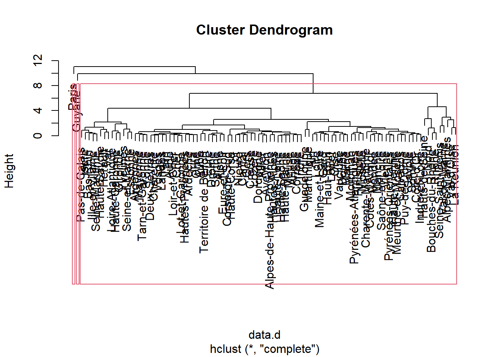
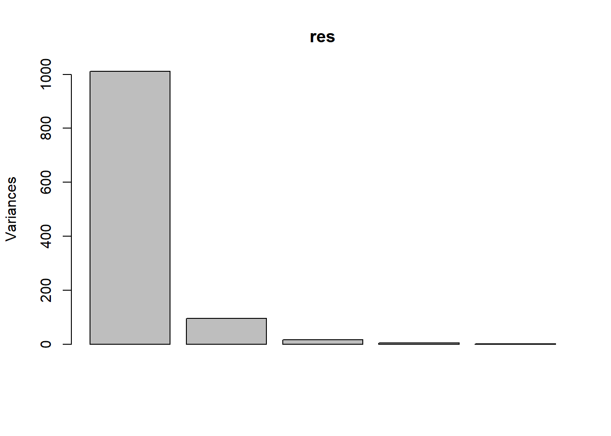
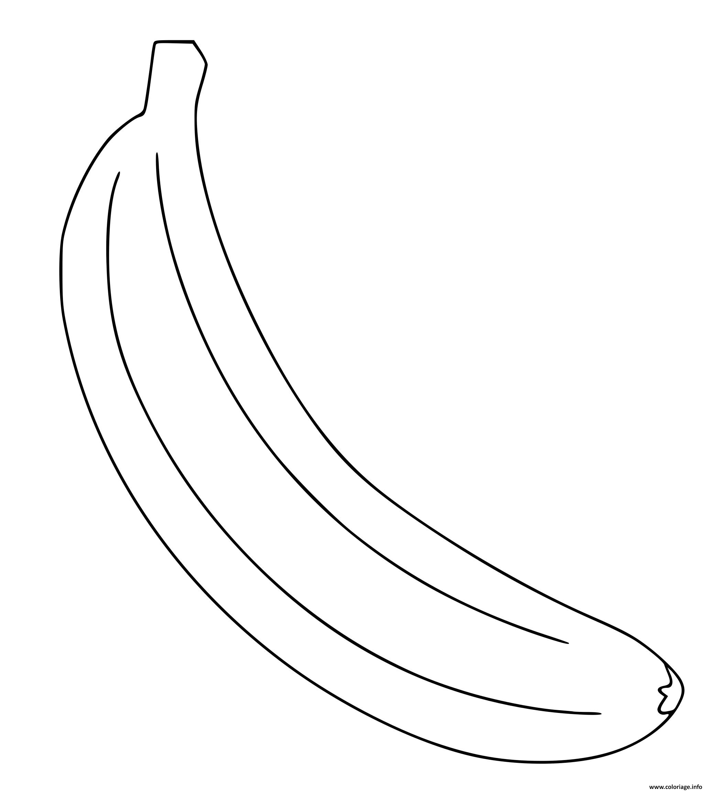
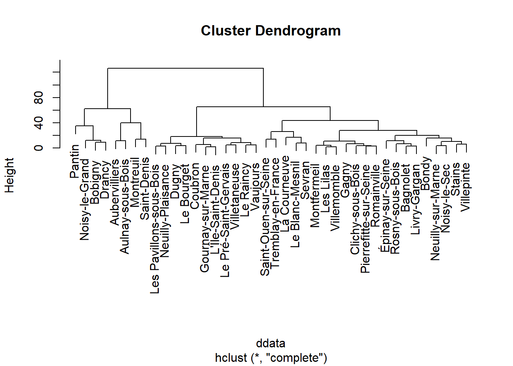
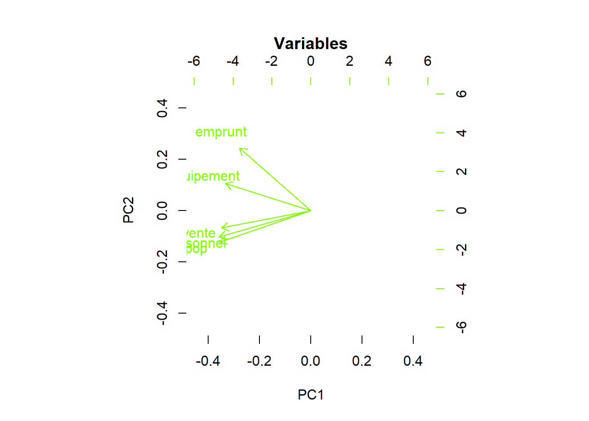
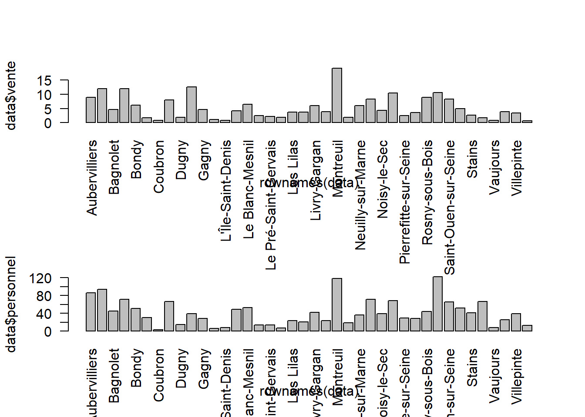
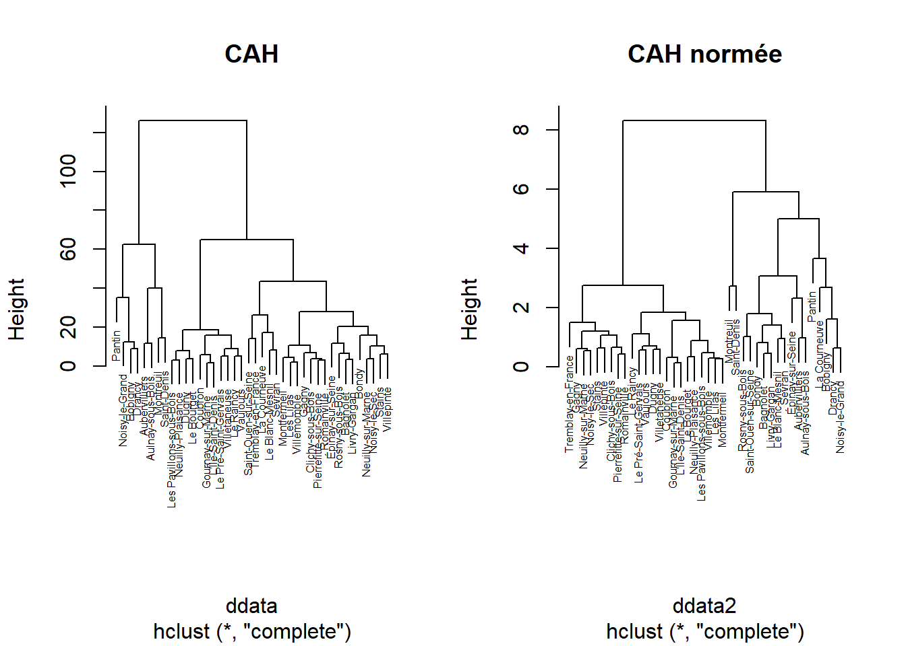
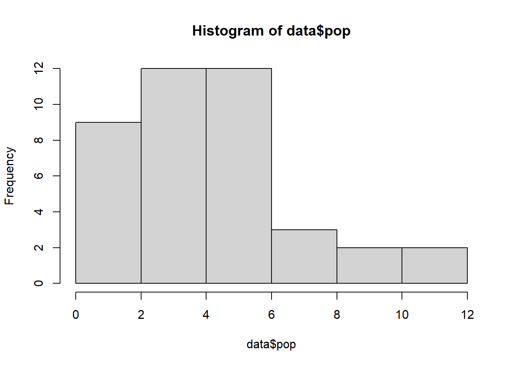

Multivariées : descriptif
Les analyses factorielles sont une démarche descriptive. Il s’agit de résumer de grands tableaux d’informations en passant des colonnes aux axes factoriels.
Attention, contrairement à la régression il ne s’agit pas d’expliquer mais de résumer.
Autrement dit, quelle est la meilleure de représenter en 2D, un objet de plusieurs dimensions ?
1 Préparation de la donnée
On reprend la donnée construite pour la régression multiple
data <- read.csv("data/baseMultivarie.csv", row.names = 2 )
# les noms de commune deviennent des étiquettes, on vérifie avec le head
head(data)## X vente personnel emprunt equipement pop
## Aubervilliers 1 8.922840 86.23647 0.07647707 28.68539 9.0259
## Aulnay-sous-Bois 2 11.969172 94.39636 1.27871516 21.21589 8.6522
## Bagnolet 3 4.606493 45.23602 4.40000000 17.85997 3.9493
## Bobigny 4 12.026500 71.44153 16.05282400 47.42069 5.5191
## Bondy 5 6.127473 51.13971 5.00000000 11.42274 5.3067
## Clichy-sous-Bois 6 1.793706 30.31320 0.00000000 13.83377 2.9806Il s’agit d’une matrice numérique de 5 variables et 40 individus.
L’ACP permet de traiter des tableaux beaucoup plus importants.
2 Exploration de la donnée
Commandes à faire à chaque fois que l’on découvre une donnée
## vente personnel emprunt equipement
## Min. : 0.7324 Min. : 3.766 Min. : 0.000000 Min. : 0.9604
## 1st Qu.: 2.1699 1st Qu.: 20.409 1st Qu.: 0.007286 1st Qu.: 9.6207
## Median : 4.0436 Median : 39.584 Median : 3.000590 Median :13.6374
## Mean : 5.3179 Mean : 42.091 Mean : 4.801627 Mean :18.4521
## 3rd Qu.: 8.1072 3rd Qu.: 56.226 3rd Qu.: 8.198120 3rd Qu.:23.0387
## Max. :19.1979 Max. :122.243 Max. :20.226050 Max. :70.7883
## pop
## Min. : 0.5107
## 1st Qu.: 2.3076
## Median : 3.9146
## Mean : 4.1881
## 3rd Qu.: 5.3399
## Max. :11.4782## vente personnel emprunt equipement pop
## vente 1.0 0.8 0.6 0.7 0.9
## personnel 0.8 1.0 0.5 0.7 1.0
## emprunt 0.6 0.5 1.0 0.7 0.5
## equipement 0.7 0.7 0.7 1.0 0.7
## pop 0.9 1.0 0.5 0.7 1.0
3 ACP analyse en composante principale
3.1 Termes de vocabulaire
Définir et classer en 2 groupes (important / pas important)
matrice d’information spatiale
analyse en composante principale
matrice d’inertie
axe d’allongement principal
axe factoriel
vecteur propre
valeur propre
qualité de représentation d’une variable à un axe
contribution d’une variable à un axe
3.2 Centrer - réduire
Centrer et réduire permet de comparer les variables dont les ordres de grandeur sont très différents. On dit aussi normer, standardiser
Centrer : on compte les écarts à la moyenne
Réduire : on divise toutes les valeurs par l’écart type.
3.3 Une seule commande mais deux choix pour le paramètre
3.4 Premier résultat : les axes factoriels
par(mfrow = c(2,2))
plot(res, "Valeur propre des axes factoriels", col="brown", border= NA)
variance <- summary(res)$importance [2,]
barplot(variance, main= "% d'inertie de chaque axe", col ="brown", border= NA)
plot(res2, "Valeur propre des axes factoriels (ACP normée)", col="chartreuse", border= NA)
variance <- summary(res2)$importance [2,]
barplot(variance, main= "% d'inertie de chaque axe (ACP normée)", col = "chartreuse",border= NA)
Un axe d’allongement très marqué. Interrelations entre variables fortes permettant une structure de l’espace.
Dans notre cas, le nuage de point s’explique très bien avec un seul axe, c’est un objet de type banane. 
La difficulté de calcul de l’ACP vient de cette notion itérative : on calcule un premier axe, puis le deuxième…
3.5 Deuxième résultat : le biplot
3.5.1 Affichage variables et individus
par(mfrow=c(2,3), bg="cornsilk")
biplot(res, main= "Résultat d'une ACP", col=c("black", "brown"))
biplot(res, col= c("white", "brown"), main = "Variables")
biplot(res, col= c("black", "white"), main = "Individus")
biplot(res2, main= "Résultat d'une ACP normée", col= c("black", "chartreuse"))
biplot(res2, col= c("white", "chartreuse"), main = "Variables")
biplot(res2, col= c("black", "white"), main = "Individus")
Deux graphiques superposés :
cercle des corrélations (les variables : les agrégats et la population)
nuage de points (les communes du 93)
On résume la donnée sur 2 axes seulement (PC1 et PC2)
3.5.2 Interprétation des variables : longueur et position
Dans le cercle de corrélations, retenir 2 éléments :
longueur flèche (mauvaise / bonne représentation)
position proche / opposée - orthogonale (= aucune relation)
## PC1 PC2 PC3 PC4 PC5
## vente -0.10988811 -0.02328499 -0.060076252 0.98164076 0.141967188
## personnel -0.91523227 0.38223415 -0.007038127 -0.10435429 0.072853278
## emprunt -0.11079393 -0.29416742 -0.945710998 -0.07120690 -0.041839244
## equipement -0.36245900 -0.87513578 0.317591777 -0.04294237 0.007228722
## pop -0.08137984 0.03094775 0.033278818 0.13629798 -0.986273259## PC1 PC2 PC3 PC4 PC5
## Aubervilliers -44.378367 9.373972 7.3523602 -0.5115967 -0.7718161
## Aulnay-sous-Bois -49.576718 18.593631 3.5902593 1.8115026 0.5194123
## Bagnolet -2.521234 1.847477 0.2044235 -1.0050524 0.3761551
## Bobigny -39.454093 -17.557603 -2.0055008 1.6588638 1.5165990
## Bondy -5.935329 9.567609 -2.4951664 0.2906443 -0.3882163Dans notre cas, l’ACP non normée permet de voir qu’équipement et personnel sont les 2 variables les mieux représentées, mais c’est omettre la population qui n’a pas du tout la même unité que les données financières.
Du coup, dans le second cas, les variables ont quasiment toute la même variation (la réduction se fait à l’écart type)

## Standard deviations (1, .., p=5):
## [1] 1.9648395 0.8306785 0.4885905 0.4292480 0.1624946
##
## Rotation (n x k) = (5 x 5):
## PC1 PC2 PC3 PC4 PC5
## vente -0.4635555 -0.2109344 0.32034608 0.7894462 0.12155713
## personnel -0.4757898 -0.3205019 0.04423367 -0.4844345 0.65899100
## emprunt -0.3706591 0.7688519 0.47795981 -0.1954703 -0.06945735
## equipement -0.4433861 0.3350211 -0.81606260 0.1581743 0.01386799
## pop -0.4740896 -0.3865395 0.03190652 -0.2808384 -0.73887623Les dépenses d’équipement sont corrélées avec deux groupes de variable (emprunt) et un deuxième groupe constitué des variables vente / population et personnel.
Par contre, emprunt et vente / personnel et population ne sont quasiment pas corrélés.
L’ACP permet ainsi de simplifier la description des variables.
3.5.3 Interprétation des individus

L’ACP permet de situer les individus par rapport aux variables.

## [1] "Aubervilliers" "Aulnay-sous-Bois"
## [3] "Bagnolet" "Bobigny"
## [5] "Bondy" "Clichy-sous-Bois"
## [7] "Coubron" "Drancy"
## [9] "Dugny" "Épinay-sur-Seine"
## [11] "Gagny" "Gournay-sur-Marne"
## [13] "L'Île-Saint-Denis" "La Courneuve"
## [15] "Le Blanc-Mesnil" "Le Bourget"
## [17] "Le Pré-Saint-Gervais" "Le Raincy"
## [19] "Les Lilas" "Les Pavillons-sous-Bois"
## [21] "Livry-Gargan" "Montfermeil"
## [23] "Montreuil" "Neuilly-Plaisance"
## [25] "Neuilly-sur-Marne" "Noisy-le-Grand"
## [27] "Noisy-le-Sec" "Pantin"
## [29] "Pierrefitte-sur-Seine" "Romainville"
## [31] "Rosny-sous-Bois" "Saint-Denis"
## [33] "Saint-Ouen-sur-Seine" "Sevran"
## [35] "Stains" "Tremblay-en-France"
## [37] "Vaujours" "Villemomble"
## [39] "Villepinte" "Villetaneuse"## vente personnel emprunt equipement pop
## La Courneuve 4.143342 49.12927 19.12000 24.61360 4.7289
## Pantin 10.504885 69.04895 20.03156 70.78833 6.0959## vente personnel emprunt equipement pop
## Aubervilliers 8.92284 86.23647 0.07647707 28.68539 9.0259
## Aulnay-sous-Bois 11.96917 94.39636 1.27871516 21.21589 8.6522Au niveau des individus, il faudrait procéder groupe par groupe pour identifier chacun, c’est le rôle des classifications.
4 Classification hiérarchique
4.1 Dendogramme
par(mfrow=c(1,2))
# matrice des distances
ddata <- dist(data)
cah <- hclust(ddata)
plot(cah, cex=0.5, main = "CAH")
# normée
data2 <- scale(data, center = T, scale = T)
ddata2 <- dist(data2)
cah2 <- hclust(ddata2)
plot(cah2, cex=0.5, main = "CAH normée")
Dendrogramme avec matérialisation des groupes
par(mfrow=c(1,2))
plot(cah, cex=0.5, main = "CAH")
rect.hclust(cah,k=4)
groupes.cah <- cutree(cah,k=4)
# normée
plot(cah2, cex=0.5, main = "CAH normée")
rect.hclust(cah2,k=4)
Observer Pantin / La Courneuve et Aubervilliers / Aulnay sous Bois, par exemple
4.2 Cartographie
## Linking to GEOS 3.12.1, GDAL 3.8.4, PROJ 9.3.1; sf_use_s2() is TRUElibrary(mapsf)
library(RColorBrewer)
palette <- brewer.pal(4, "Accent")
geo <- st_read("data/communes93.geojson")## Reading layer `communes93' from data source
## `C:\Users\tachasa\01_stat\data\communes93.geojson' using driver `GeoJSON'
## Simple feature collection with 307 features and 48 fields
## Geometry type: GEOMETRY
## Dimension: XY
## Bounding box: xmin: 2.288278 ymin: 48.80725 xmax: 2.6033 ymax: 49.01233
## Geodetic CRS: WGS 84# transformation de la liste des groupes en dataframe
df <- data.frame(groupe = groupes.cah2, name=names(groupes.cah2))
# jointure entre la géométrie et la donnée
jointure <- merge(geo, df, by = "name")
mf_map(jointure, type = "typo", var = "groupe", border = NA, leg_pos = NA, pal = palette)
mf_legend("typo", title="",val= c("groupe 1 : importance de l'emprunt",
"groupe 2 : équipements",
"groupe 3 : moins d'emprunt",
"groupe 4 : population / personnel et vente des services"), pal = palette, pos = "bottomleft")
mf_layout("CAH normée = groupes", "OFGL 2025")
L5GEABIM Analyses bivariées et multivariées